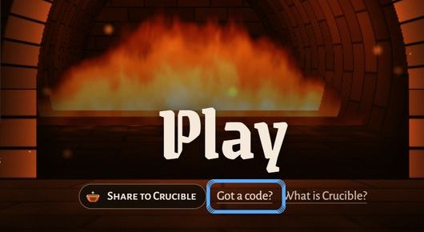
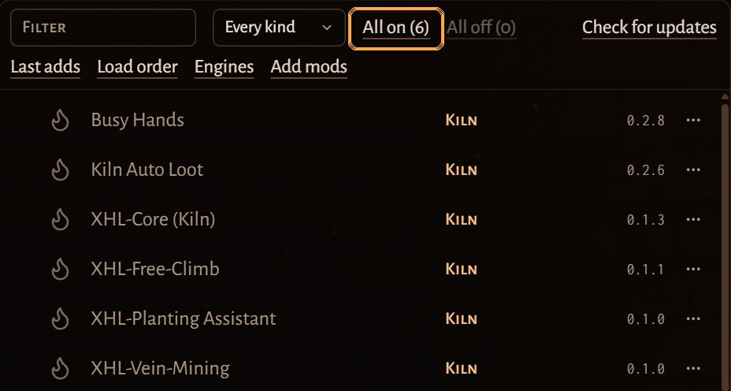
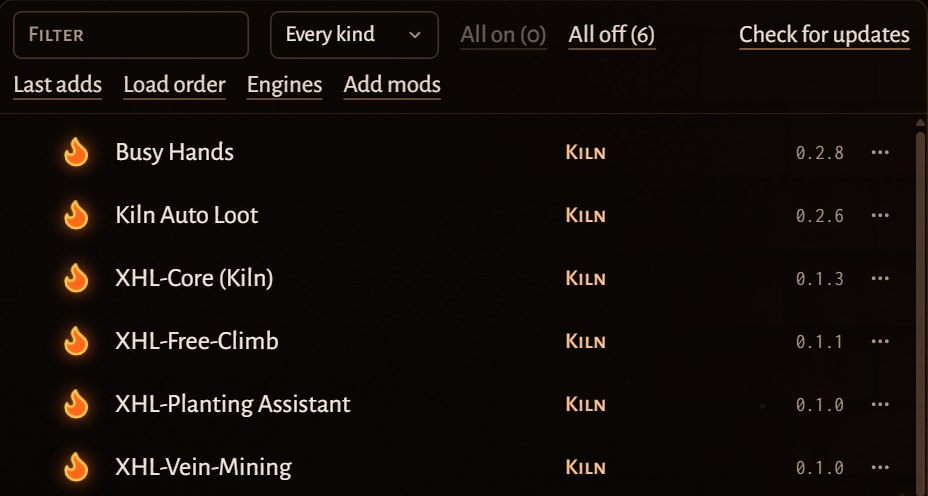

Join Beria
Install Kiln from the Downloads page, then connect with the details below.
Friends and admins have their own passwords. Ask the host.
How to join
- Install KilnGet the launcher from the Downloads page.
- Get the Beria modsIn Kiln, click Got a code? under the Play button and enter , then click All on to switch the mods on. Full steps are on the Downloads page.
- Start the gameStarting from Kiln is recommended, but starting from Steam works too.
- Choose Join GamePick Direct Connect and paste the server address.
- Enter your passwordYour password decides your role in the world. See Roles for what each one can do.
Downloads
Download Kiln, then enter the Beria code in it to get the server’s mods.
Kiln for players
The latest Kiln build for the game client. This is not the server version.
Download latest KilnBeria mod pack code
Enter this code in Kiln to download the Beria mods from Crucible.
Install
- Download and open KilnInstall it anywhere you like. It doesn’t need to go in the game folder.
- Click “Got a code?”It’s under the Play button, next to Share to Crucible. The screenshot below shows where.
- Enter the code Kiln downloads the Beria mod pack from Crucible.
- Switch the mods onThe mods arrive switched off. In the mod list, click All on. Each mod’s flame lights up orange when it’s on.
- Press Play and joinStarting from Kiln is recommended, but Steam works too. Then connect with the Home page details.



Mods
The mods running on Beria. Entering the Beria code in Kiln installs them for you (then click All on to switch them on), so these links are just for reading up on what each one does.
Roles
Your password decides your role in the world. Here’s what each one lets you do. Friends and admins have their own passwords: ask the host.
| Role | Edit world | Edit base | Extend base | Open inventories | Kick and ban |
|---|---|---|---|---|---|
| Admin | Yes | Yes | Yes | Yes | Yes |
| Friend | Yes | Yes | Yes | Yes | No |
| Guest | Yes | No | No | No | No |
| Visitor | No | No | No | No | No |
About Beria
A private Enshrouded dedicated server running Kiln, so mods and permissions are managed on the server.
Rules
- Be respectful in chat and in voice.
- Don’t grief or destroy other players’ builds.
- Ask before building close to someone else’s base.
- Don’t share passwords outside the group.
- Report bugs and crashes instead of exploiting them.